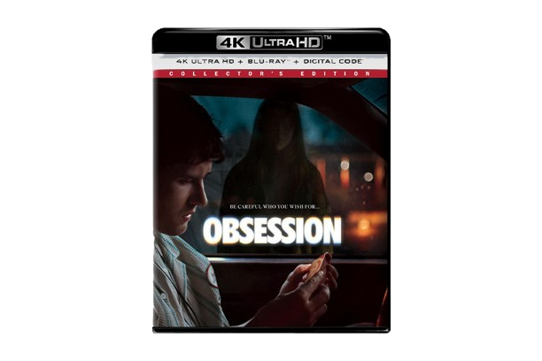

Obsession (4K UHD Collectors Edition)
₱2,199
Buy Now
When Bear uses an ancient artifact to make his crush fall in love with him, affection turns into a terrifying nightmare in this supernatural horror hit.
- Format: 2-disc 4K Ultra HD + Blu-ray
- Video: 2160p Ultra HD with Dolby Vision
- Includes: Immersive Audio, audio commentary, and collectible slipcover
- Age Rating: Rated R (for strong horror violence, bloody images, and dark thematic elements)
